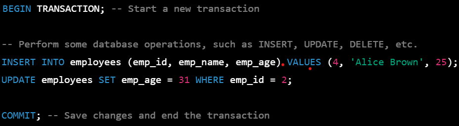

In SQL, the COMMIT command is used to permanently save changes made to a database during a transaction. It is typically used in combination with the BEGIN TRANSACTION and ROLLBACK commands to manage transactions. When you execute a COMMIT command, any changes made to the database within the current transaction are permanently saved, and the transaction is considered to be complete. The changes made within the transaction are now visible to other users or applications accessing the same database.
COMMIT;
